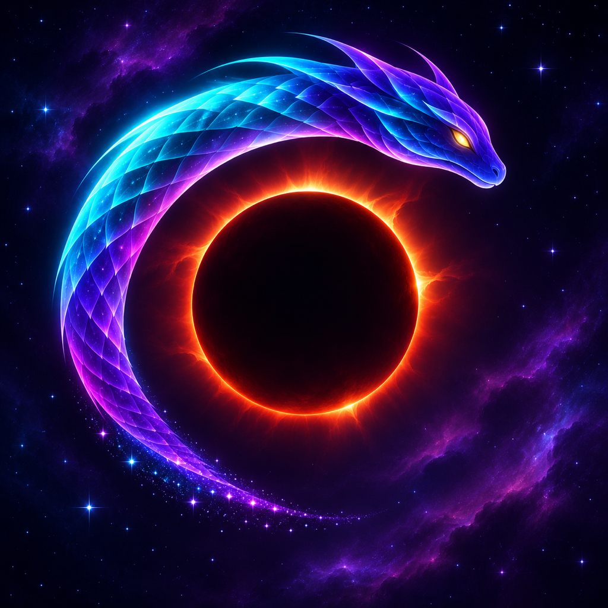

Keep the hunt going.
Collect food and watch your serpent grow. A longer tail means a tighter path.
A cosmic arcade challenge
Grow your serpent. Sharpen your turns. Chase your next high score.

Every turn counts
Guide your serpent, collect food, and keep growing. Every bite makes you longer. Every turn leaves less room for error. Plan your path and see how far you can go before your own tail catches up with you.
Collect food and watch your serpent grow. A longer tail means a tighter path.
Read the space ahead, time your moves, and leave yourself a way through.
A quick break or a determined high-score chase. There's always a reason for one more game.
Built independently by BuiltByIrbs
Cosmic Serpent brings the appeal of classic snake into a vivid cosmic setting. Have a question about the game?
Get support →